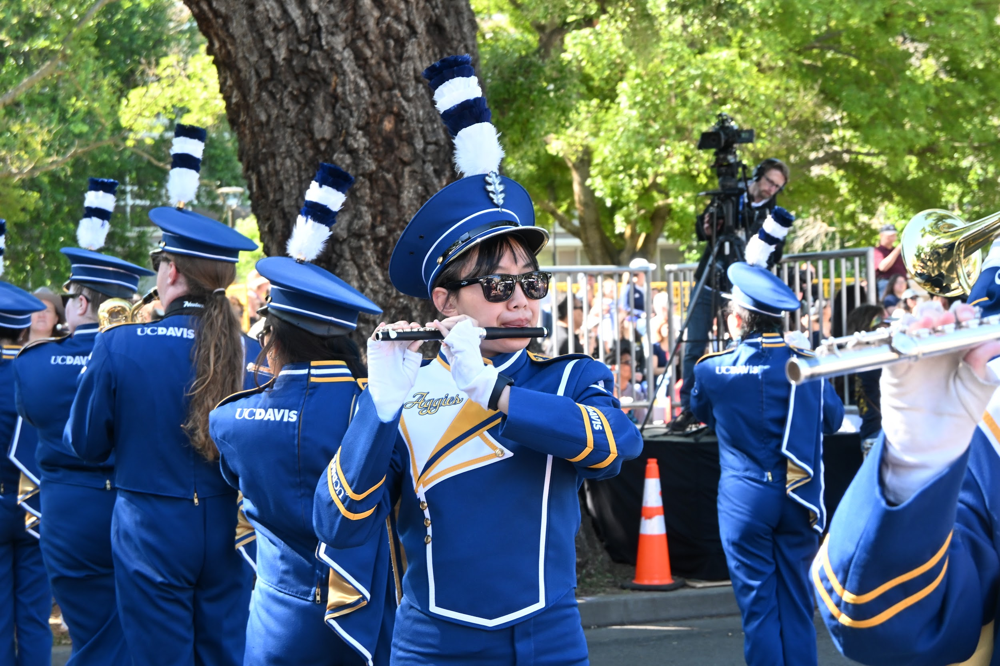
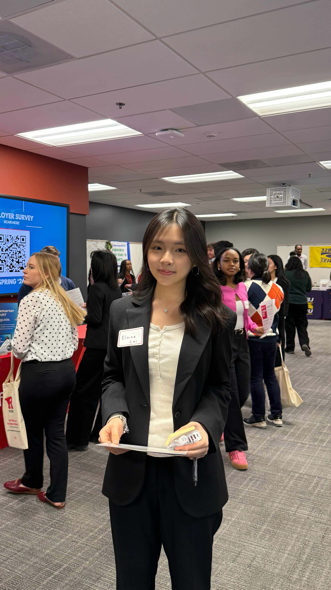
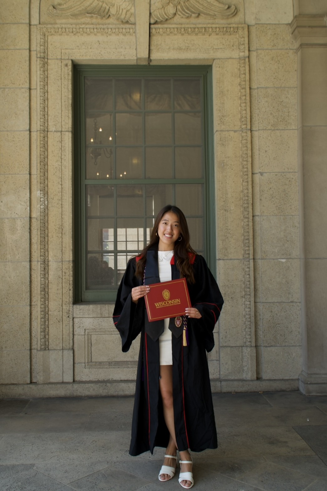

asterisk DA REN INTERNATIONAL PROGRAM
115 學年度 · 國際學程升學講座
讓世界，
成為下一站
在達人，打穩學科基礎、拓展語言能力，
用三年的累積，走向自己的國際舞台。
language從 G10 到 G12
每一步，都有方向。
YOUR NEXT CHAPTER
三位學姊的海外學習經驗
UC Davis寫作訓練，幫助適應快速學季與大量課業。

Rutgers Business School雙軌學科基礎，首學期獲院長嘉許。

Wisconsin–Madison英文溝通與多元課堂，累積獨立與自信。
G10G12
學科 × 語言YOUR WORLD, WIDER.asteriskACADEMICSasteriskLANGUAGEasteriskEXPERIENCEasteriskYOUR NEXT CHAPTERasterisk
01 / POSSIBILITIES
每一種熱愛，
都有自己的世界座標。
商業、藝術、生物醫學與心理。
不同的志向，開出不同的錄取風景。
選擇領域，探索錄取學校
02 / THE FOUNDATION
把目標，
變成日常的累積。
海外升學的三大重點，
也是高中三年的準備主軸。
01menu_book
校內 GPA
ACADEMIC FOUNDATION
在校成績，是國外大學入學的重要參考。以雙軌課程兼顧學科基礎與語言學習。
了解雙軌課程02forum
英檢 + SAT
LANGUAGE & TEST PREPARATION
以 IELTS 6.5 為英語準備目標，透過模考、口說、寫作與寒暑輔持續準備。
探索語言準備03volunteer_activism
志工與特殊經歷
EXPERIENCE & CONTRIBUTION
走進社區，參與服務。在課堂之外，理解社會、探索興趣，也發現自己能帶來的改變。
看看服務現場03 / TWO TRACKS, ONE JOURNEY
學科扎根，
語言開展。
中師必修 × 外師課程
穩固學術內容，提升語言成就，
支持在校 GPA 的累積。
選擇年級
+ ×LANGUAGE IN ACTION
讓英文，
成為能帶走的能力。
寒暑假加強雅思英檢與 SAT。透過模擬測驗掌握進度，由外師加強口說與寫作。
G10–G11寒暑輔課表
MONDAY — THURSDAY
IELTS 模擬測驗接續 IELTS 課程 · 口說與寫作準備
Your World Competition國際視野與學習活動
SAT English下午英語課程，15:10 進行 SAT 模考
FRIDAYVolunteer · 志工服務
04 / BEYOND THE CLASSROOM
學習的邊界，
比教室更遠。
淨灘、陪伴閱讀、動物收容服務、長者活動。
從一次次參與，練習關心，也學會行動。
05 / YOUR THREE-YEAR ROADMAP
三年，有方向地
走向你的下一站。
從認識自己，到準備好出發。
把一個大目標，拆成每一年的具體行動。
schedule每週一次，10 分鐘。專業顧問諮詢，持續掌握申請方向與最新升學進度。
06 / VOICES FROM ABROAD
走出去的她們，
把經驗帶回來。
從大一適應，到大四畢業。
聽學姊說說，國際班留下了什麼。
THE DA REN ADVANTAGE
達人國際班優勢
100%
111 年・112 年
錄取世界
前 30 大
歷屆成果，非現行排名或未來錄取保證
01 / ACADEMICS以中文學習，打穩 GPA
校內必修＋選修以中文學習，
GPA 成績較理想。
02 / GUIDANCE每週專業諮詢
每週一次 10 分鐘，
掌握申請方向與最新升學進度。
03 / INTERACTION小班精緻教學
外師口說練習時間充足，
透過課堂互動，強化口說能力。